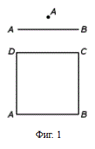
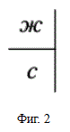

Беседа 2908 от 3877 · Беинса Дуно
Четвърто измерение
Отче наш.

Та природата си има много езици, с които говори на хората. Който не разбира, казва: „Пише само точки.“ Друг казва: „Пише само прави линии, някъде плоскости пише, някъде тела.“ Най-после, природата говори с още други работи, които не може да ги определим. Вън от тялото какво прави природата? Пак прави нещо. Научно как ще го определите? Казва: „Не разбирам този човек.“ Защо не го разбираш? Ти го разбираш, докато прави точки, ти го разбираш, докато прави линии, плоскости, докато прави тела, но започне ли да прави повече от тела, ти казваш: „Неразбрани работи.“ В какво седи неразбраното? Всяко нещо, което е неразбрано, ти не знаеш посоката накъде. Запример, накъде ще начертаете движението на четвъртото измерение? Движението на първото измерение може да го представите като движение напред и назад. После, второто измерение, имате движение в перпендикулярна посока, образува се вече плоскост, може да определите посоката и третото измерение, но посоката на четвъртото измерение как ще определите? Четвъртото измерение, то не е пространствено. Четвъртото измерение, то е измерение на времето. Четвъртото измерение показва едно тяло, което е в движение. Вие казвате: „Точката не се ли движи?“ Тя, точката се движи по причина на четвъртото измерение. Плоскостта се разширява по причина на четвъртото измерение. Във времето вече вие имате едно тяло, което се движи в пространството и определяте времето, за колко време ще иде от едно място на друго място. Когато определяте събитието, то е онзи принцип на четвъртото измерение. Какво нещо е четвъртото измерение? Щом измерваш на колко години си, ти си в четвъртото измерение. Или пък искаш да знаеш колко израстваш всеки ден, в четвъртото измерение си. Всяко движение, в каквато посока и да го направите, то е онзи принцип на четвъртото измерение. Посоката на времето е то вече. Пространство и време. Пространство, ще знаете мястото, дето един предмет заема. А пък времето, предметът каква работа е извършил. Като се движи ръката, какво изработвате с ръката си, а времето, което вие измервате, за колко време вие изработвате тази работа. То е посоката на четвъртото измерение. Ще кажете, че се движи това тяло, но в каква посока се движи в дадения случай? Вземете един светещ предмет, който се движи. Светлината движи ли се само в една посока? Сега вие ще разберете движението. Туй движение е вече ограничение, то е част от движението. То е една малка част от четвъртото измерение. Може да турите един предмет, който да показва пълното движение на предмета, светлината може да е напълно затворена, да виждате, че тя прави едно отражение.
Та казвам сега: Според учените хора, какво нещо е четвъртото измерение? Сега искате по нов начин да го определя. Четвъртото измерение показва времето. От години вие сте се занимавали с четвъртото измерение. Казвате: „Лоши времена настанаха.“ Лоши времена, значи, четириизмерни или четириизмерните времена показват четвъртото измерение. Сега едно знание, което имате в науката, трябва да има приложение.
Природата иска да застави всички същества, които турила на земята, да започнат да мислят. Запример, ако вие попитате: „Как се яви страхът в природата?“ Туй чувство в човека, във всинца ви как се яви? Във всички ви страхът не е еднакъв. Някои са по-страхливи, някои са по-малко страхливи. Как бихте определили „страха“? Какво нещо е „страхът“? Страхът произтича от онова, че в тебе се заражда една идея, че може да изгубиш най-ценното, което имаш – живота. Значи, страхът произлязъл, че може да изгубиш в даден случай живота, който имаш, да престанеш да съществуваш, да живееш. Следствие на това, за да не изгубиш най-ценното в себе си, понеже ще дойдеш в стълкновение с някое друго същество, ти като премериш силите и видиш, че туй същество е по-силно от тебе, ти веднага измениш мястото си. Какво ще направиш? – Ще му дадеш ход, ще се оттеглиш да мине, както на трена, на експреса дават да мине пред друг трен. В животните страхът се изразява (в) бягане. Някоя птица седи на някое място, щом се приближи някое същество до нея, тя бяга. Защо бяга? – За да не изгуби ценното. Страхът произтича от онзи факт в съзнанието, да не би да те сполети някое нещастие. Нещастието седи в това да изгубиш живота, най-ценното, твоето собствено място. Най-ценното е, че животът, който се явява, винаги ще вземе едно пространство. Животът като дойде, винаги окупира, казва: „Това е мое.“ Но природата дошла, че ти като вземеш това пространство, като туриш твоето колело, започнеш да се търкаляш. Нахраниш една кола, ако ти не я караш, друг дойде, впрегне колата, потегли. Питам: Онзи, който кара колата, какво иска да каже с туй? Или вие сте едно същество направено и най-първо съзнавате, че трябва да се движите.
Питам: Вие сте дошли в класа, каква е целта ви, какви са съображенията ви? Ще кажат, че слънцето не е изгряло, тъмно е отвън. Какво ви интересува вас? Другите хора си почиват, вие сте станали толкоз рано да учите. Не сте само вие. Онези хора на север, като се скъсят дните, има места, дето денят е от три часа, пък нощта е от 21 часа. Има места пък, дето няма никакъв ден. Та казвам сега: Как ще определите, ако ви дадат една тема, защо се скъсяват дните и защо се продължават. Ако сте в нашите места, умерения пояс или ако сте на екватора, как ще обясните? Или ако сте на северния пояс, как ще обясните? Ще кажете, че тук имаме 365 дни. Но като идете на северния полюс, има само един ден – събота. Значи, когато Мойсей каза: „Шест дни ще работиш, а седмия е на Господа Бога твоего“, подразбира, като няма какво да работиш, ще идеш на северния полюс. Един на северния полюс, той е сбор от 182 дни. Но представете си, че вие се движите. Имаш един път от северния полюс до южния. Движите се със скоростта на светлината и щом рече слънцето да залезе, ти идеш в южното полушарие. Вие веднага ще минете, ще прекарате в южното полушарие. Значи, вие 180 дни ще живеете на северния полюс, 180 дни на южния полюс, ще имате един ден от 365 дни. Значи, туй показва едно движение. Слънцето не е светило на северния полюс 365 дни.
Сега вашите противоречия произтичат от едно временно разбиране. От какво произтича неразбирането? Земята ни опитва в тази работа. Знаете ли колко своеобразни движения има земята от научно гледище? Проучете малко астрономия. 19 своеобразни движения има земята. Те са повече, но толкова засега са наблюдавани. 19 своеобразни движения, които има земята. Тя не се движи тъй равномерно. За всяко движение учените все дават някои обяснения. Сега ще оставим какви обяснения дават, защото те са дълги и широки въпроси. Ако един човек го виждаш прав и изведнъж се хване за корема и се прегъне, коя е причината? Може да каже някой, че той дълго време седял и се прегънал, може някой да каже, че той прави гимнастика. Не е гимнастика. Той тури ръцете на слънчевия възел. Онзи, набожният човек и той се хваща и се навежда. Един се хваща и се навежда, защото го боли коремът. Кога ще познаете, че едното навеждане е принудително, ял човекът несъответствена храна и следствие на това болежка в стомаха. Питам тогава: Защо туря ръцете на корема? Оставете да ви боли корема, защо вие се хващате? Кои са подбудителните причини? Какво ви заставя да се хващате? Сега вие как го обяснявате? Най-първо, щом ви боли коремът, ял си храна, която не съответствува на организма и следствие на това тази храна произвежда едно особено явление на болка. Вие ще кажете, че храната не е добре сготвена, не е хубава. Може храната да е била много добра, но да кажем вие ядете много бързо, без да я сдъвчите, пращате тази храна в стомаха. Стомахът не може да се справи с несдъвканата храна. Някой път добре сдъвчите храната и коремоболието пак дойде. Може причината да е, като сте яли, сте пили студена вода и следствие на туй стомахът не може да се справи с водата. Стомахът усеща едно неразположение. Иска да ви каже: „Толкоз вода след ядене няма да туряте, защото много препятствува на работата.“ Наводнено място вътре. Следствие на това наводнение се образува коремоболие. Но и тогава не се свършва. Може храната да е развалена. Сега, това са обяснения. Много пъти ние си обясняваме някои неща в живота и не знаем как да си ги обясним. Сега, как ще познаете защо този човек се хваща с двете ръце за стомаха? Или наблюдавали сте друг факт. Често, когато човек се опари, духне. Като си опари на огъня пръста, изведнъж духне. Огън на пръста няма, но духне на пръста. Защо духа? Сега, не само да си предполагате, трябва да се даде разумно обяснение. Защо духа? Причината е, че всякога топлината произвежда разширение. Вашият пръст иска да стане по-голям, отколкото е, понеже тръгва в една нова посока, понеже тебе те е страх, да не би пръстът да стане много голям, ти духаш. Стой на мястото си! – Заповядваш му. Ти тогава, като го спреш в неговото движение, усещаш една болка. Той се спре и казва: „Какво трябва да правя отвътре?“ По невнимание си бутнал огъня, огънят събужда твоя пръст към движение. Туй е моя хипотеза. Някой друг може да ви обясни с друга хипотеза, но той трябва да обоснове. Като духнеш, какво обяснение ще дадеш? Някой път не му духа като се опари, но го хване с другата ръка. Как ще го обясниш? Той казва: „Моля, моля да ме не оставиш, без тебе не мога.“ Същото обяснение.
Върви детето по пътя и казва, че много обича майка си. Всякога върви с нея, не иска да се отдели. Но по едно време вижда хубави сливи или ябълки, току напусне майка си и веднага иде за плодовете. Отделя се. След като вземе плода, настигне майка си. Ако детето остане назад, майката го пита: „Защо остана назад?“ Какви научни обяснения ще даде детето? Най-първо, ако го е страх от майка му, ще даде една лъжлива теория. Ще каже, останало назад, защото се е спънало или нещо друго. Няма да каже, че останало за ябълките. Ако каже, че останало за ябълки, майката ще каже, че то не е правилна наука, че не е учило добре. Питам: Туй дете отде се научи тъй да отговаря? Откъде в него това желание да остави майка си? Как ще обясните? Тук може друга теория да създадете. Може да кажете, че детето, което върви с майка си, привлича се, теготения има или магнетизъм има. Теготене или магнетизъм, причината е една и съща. Туй дете се привлича от майка си. Като мине край дървото, един от плодовете привлича детето. Понеже минало (по-)близо, отколкото майката се движи, ябълката накарала в дадения случай туй дете да направи едно обикаляне. Научно казано, да разшири своята орбита. След време пак влиза в своята орбита. Земята, и тя не върви по своя, по един кръгообразен път, но пътят на нейната орбита е елипсовиден. На някои тела орбитата е много продълговата. Питам сега: Как може ябълката да повлияе на ума на детето? Как ще обясните вие научно това? Някои деца минават и само поглеждат. Направи едно движение, погледне, има съображения. Пък друго дете напуща майка си и взема плод, и после пак се връща при майка си.
Казвам сега: Въпросът е за времето. Казва: „Ценете времето.“ Ние имаме 24 часа в едно денонощие. Да цениш времето, да знаеш всеки час какво трябва да направиш. И във всяка една минута на часа да знаеш какво трябва да направиш, и във всяка една секунда. Секундата означава времето, в което нашето съзнание е будно. Най-малкото време е една секунда. Има и по-малки времена от тези мерки. Ако живеете в един свят, в една секунда светлината изминава 300 хиляди километра. За вас секундата се вижда, че е малко време, а светлината за една секунда свършва такава работа, че вие трябва цяла година да вървите, за да извървите това място.
Сега да се повърнем към въпроса. В този час какво трябва да знаете? След като човек е спал и се събуди, каква работа ще свърши? Каква мисъл да дойде в неговия ум, какви чувства и какви постъпки трябва да направи? Как ставате вие сутрин от леглото? Има разни ставания, но кое е естественото ставане? Главата я поставяте на възглавницата, изтегнете се. Спазвате този закон. Най-първо в съня изучавате първото измерение. Проточиш се, дигнеш ръцете си – първото измерение. След туй, понеже в съня се учите, учените професори в съня казват: „Има и друго измерение.“ Вие казвате: „Ние изучаваме първото измерение.“ Вие спорите, започвате да свивате ръцете и краката – второто измерение. Не само второ измерение има, вие започвате да движите ръцете, мърдате, казвате: „Има и трето измерение.“ – Обръщате се на едната страна, на другата. То е третото измерение, изучавате го. След като се събудите, вие влезете в четвъртото измерение. Казвате: „Бях някъде, сънувах, говорих нещо.“ Всичките лекции ги забравяте. Научни работи, много дълбоки работи в съня ви разправят. Изучавате точките, правите линии, плоскостите, изучавате телата, най-после изучавате четвъртото измерение. Или станете и кажете: „Какъв е смисълът на живота?“ Смисълът на живота вече изисква движение. Трябва да започнеш да мислиш. Мисълта е от четвъртото измерение. Трябва да чувствуваш – и то спада към четвъртото измерение. Трябва да постъпваш, да направиш нещо, и то спада към четвъртото измерение.
Аз ви казвам по този начин да мислите. Някой път сме питали какво нещо е четвъртото измерение. Мислиш – то е четвъртото измерение. Чувствуваш – то е четвъртото измерение. Постъпваш – то е четвъртото измерение. Най-разни положения в четвъртото измерение. Четвъртото измерение е движение във всички направления. Движение на мисълта в едно направление, движение на чувствата в едно направление, движение на постъпките в едно направление. И после има ред други движения, разнообразие има. Та някой път вие се спирате, казвате: „Не може ли без четвъртото измерение?“ Без четвъртото измерение ти ще умреш. Умрелите гният. Гниенето е пак четвъртото измерение. Те се разлагат. Разлагането е пак четвъртото измерение. Разглоби се човекът, разпръснат се костите. Те изучават четвъртото измерение, разширяват се навсякъде. Сега другото обяснение. Вас ще ви внеса в една област. Казвате: „Човек умрял.“

Ако аз туря 0,00001 така единицата, какво означава? Ако е в светлината, какво показва? Ако е в светлината може да показва дължината на вълната. Ако напишем така 0,01, тази вълна е по-дълга. Колкото повече нули има пред единицата, толкова вълната е по-къса. Каква (е) разликата между дългите и късите вълни? Дългите вълни на близко разстояние свършват хубава работа, но колкото вълните са по-къси, по-хубава работа свършват. Най-късите вълни отиват в безпределното пространство. Да кажем, вие говорите някому и вашият глас се слуша от единия край на салона до другия. На един километър нищо не се чува. Има хора, които едновременно говорят и на дълги, и на къси вълни.
Но да се повърнем към въпроса на движението – пространство и време. В дадения случай вие трябва да оценявате пространството, в което се намирате. В даден случай вие трябва да оценявате времето, в което се намирате. То е мярката. В природата туй, с което се мерят нещата, дали са добри или зли, и любовта се мери с тази мярка. И постъпките се мерят с тази мярка. Има една мярка в природата, която е праволинейна. Като казват: „Прав трябва да бъдеш, праволинеен.“ Има една мярка, която измерва всичките пространства. Да бъдеш праволинеен не е толкова научно. Но има една Божествена мярка, с която мерят всички неща. Как ще мериш дали твоята мисъл е права или не? Как ще мериш дали твоите чувства са прави или не? Или как ще измериш една своя постъпка, как ще я оцениш? Казва: „Трябва да се оцени.“ Но трябва да се измери най-първо. По кой начин може да се измери дали вашата мисъл е права? По кой начин може да оцените една постъпка? Вие как оценявате една ваша добра постъпка, как я измервате? Казвате: „Този човек е праволинеен, прав човек е.“ Нали казвате често: „В какво седи тази правота?“ Правотата седи най-първо в очите. Когато на едно дете постъпката му е крива, вълните, които излизат от неговото зрение, майката вижда, че то избягва погледа ѝ, образуват криви линии. Не гледа направо, но накриво гледа. Как дошла майката да разбере, казва: „Крие нещо това дете, не ме гледа направо.“ Детето или затваря очите, или погледне надолу, или гледа нагоре, но не гледа майка си право в очите. Казва: „Направило е нещо.“ Какви са съображенията? Откъде майката добила туй познание? Вие откъде сте го добили? Как запример знаете, че един поглед не е прав? Детето като си крие погледа от майка си, то говори научно. Майката го пита: „Ти ходи ли в градината?“ То гледа надолу. „Тебе, казва, не те ли е страх от Господа?“ Детето погледне нагоре. „Знаеш ли, че лошо си направил?“ – Детето гледа надолу. „Не знаеш, че Господ ще те съди.“ – Гледа нагоре. То научно разглежда. Казва: „Центърът на земята ме привлече.“ Като го пита: „Защо направи това?“ – То гледа надолу, иска да каже: „Причина е земята.“ – „Че Господ ще те съди.“ – То гледа нагоре, казва: „Причината е горе.“ Майката казва: „Не отговаря.“
Някой път вие не разбирате себе си. Някой, казвате, се затворил в себе си. Щом се затвориш в себе си, причината е в твоята симпатична нервна система. Земята е причината. Щом се затвориш горе в главата си, причината е в мозъка ти. Ако усещаш една болка, причината е в сърцето ти, в чувствата ти. Ако усещаш едно напрежение на мисълта, че нещо ти е объркано, причината е горе в мисълта. Всяко нещо трябва да се търси или горе в човешкия ум, или долу в човешкото сърце. Сърцето е свързано с центъра на земята. Мисълта е свързана с центъра на Слънцето. Вследствие на това детето гледа ту надолу, ту нагоре. Тогава, научно, два центъра има, погледне, какво е отношението. Тогава между тия двата центъра вие може да се движите по права линия. Някой път решаваш: „Да го направя ли?“ Мислиш, мислиш, после дойде другото. Ти искаш да дадеш, да направиш милостиня някому, понеже тъй било писано морално. Мислиш някъде в главата, бръкнеш в джоба, извадиш сто лева. Като ги погледнеш, сърцето казва: „Много са.“ Туриш ги в джоба си. Като мислиш, започваш да гледаш надолу, пак бръкнеш в джоба, търсиш една монета по-малка. Туй, което дава много, е умът. Туй, което дава малко, е сърцето. Човек, който дава много, умът работи, който малко дава, сърцето работи. Който малко свършва, волята работи малко. Най-малко дава волята. Тя като направи за пет пари работа, затуй я карат навсякъде да работи. Много трябва да работи, за да свърши нещо. Щом сте щедри, умът работи. Дето не сте щедри, сърцето работи. Ленив сте, вашата воля работи. Леността е на волята. Тя като дойде да работи, казва: „Времето е дъждовно, вятър има, условията са лоши, хората неразбрани, условия нямам, малко съм неразположен, болен съм.“ Хиляди научни аргументи доказва и ти се убедиш, че професорът е прав. Не може по никой начин. Дойде някъде и сърцето. Волята и сърцето се присъединят и казват: „Не му е времето, хората няма да ви разберат, за тебе ще си съставят лошо мнение.“ Някой път дойде умът и казва: „Време е.“ Започне да аргументира, че сега време има. Умът е цял пророк. Казва: „Времето след четири–пет часа ще се оправи, трябва да идеш на нивата да работиш.“ Казват: „Не виждаме ли ние, че дъжд вали, не може.“ Казва: „Ще се оправи.“ – „Ти не говориш вярно.“ Случва се, че времето след 4–5 часа се оправя. Както казал умът, става. Волята и сърцето питат: „Ние не знаем, отде знаеш това?“ Онова, което ориентира, то е умът. Той каквото казва, ще слушате. Той е капитан. Ще слушате сърцето, ще слушате и волята. Най-първо ще слушате ума, главата. После ще слушате сърцето.
Причината за изядането на ябълката е земята. „Че я изядох, казва, Господ ми позволи.“ Гледа нагоре. То говори на праволинеен език на майка си. По права линия говори. Казва: „Земята ме накара да изям ябълката.“ Казва: „Кой ти даде правото?“ – Гледа нагоре. – „Господ ми позволи, хванах я с ръцете си, моята воля и тя се съгласи.“ Сега и трите свята бяха съгласни. Хубаво, ако вие направите една постъпка, че нито нагоре гледате, нито надолу гледате, как ще разрешите въпроса? Ако ти гледаш направо, кой е причината? Ако се спънеш, че паднеш някъде, как ще обясниш? Всяка една погрешка заради мене е едно спъване. Да направиш една погрешка, то е едно спъване. Човек винаги се спъва. Наблюдавайте себе си. Всякога, щом човек се раздвои, неговият ум върви в две противоположни посоки на своето движение, той винаги ще се спъне. Ако не може правилно да разрешите един въпрос, същият закон е. Щом се раздвои умът, мислиш едно, а сърцето друго, вие въпроса не може да го разрешите. Седите някой път, нещо ви казва да ядете. Друго нещо ви казва да работите. Може да се спрете и десет минути да разсъждавате дали трябва да ядете или да работите. За десет минути знаете ли колко сте изгубили? За десет минути земята колко километра е извървяла? За десет минути тя е извървяла три милиона километра.
Та казвам: Правата мисъл моментално се разрешава. Тия неща, които моментално се разрешават, ние ги казваме „интуитивни“. „Ин“ значи вътре. Значи, вътрешното, Божественото е, което разрешава веднага нещата. То е право. То е правата мярка. Интуитивно нещата се схващат мигновено, веднага се определя да го направиш или не. Туй, което се спираш дълго време да мислиш, разсъждаваш дали е право или не, туй (не) е вече Божествената мярка. Когато ние не употребяваме правилната мярка, всякога правим погрешки. Там, дето не си раздвоен в мисълта, в чувствата и в постъпките си, ти си прав. Дето си раздвоен, всякога погрешка ще стане. То е едно състояние земно. Раздвоен си, да го направиш или не.
Та казвам: Там, дето сте самоуверени, вие трябва да учите. Пълната самоувереност, то е Божественото. Дето не си самоуверен, трябва да поправяш. Тогава ще ви дам едно правило. За да мислиш Божественото, започни най-първо със светлината. Трябва да имаш светлина в ума си. Тази светлина трябва да бъде такава, че да можеш да четеш. Щом в една светлина не можеш да четеш, не може да разрешиш един въпрос, мисълта ти не действува правилно, светлината не е правилна. Може тая светлина да е слаба. Нали някои хора имат слаби очи, че трябва да си турят очила. На една вощеница не можеш да четеш. Трябва десет, петнадесет свещи, да се увеличи светлината, да можеш да четеш. Когато чувствата дойдат, те се отличават по това, че непременно трябва да се увеличи вашата топлина. Тогава, когато се намалява светлината, хората се спъват. Когато се намалява топлината, хората падат. При всяко спъване показва, че е станало едно намаляване на светлината. При всяко падане показва, че е станало едно намаляване на топлината. Без светлина ще се спънеш. Без топлина ще паднеш. Ако на един човек му отнемете топлината, той веднага ще се сгромоляса. Щом дойде топлината, той се раздвижва. Та казвам: Когато се спъвате, малка ви е светлината. Ако падате, малка ви е топлината. Или да преведа психологически: Ако се е намалила светлината, значи вашата мисъл не работи. Ако се намалила вашата топлина, значи вашите чувства не работят. Казвам: Трябва да мисли човек, за да има светлина. Като мисли, се образува светлина. Светлината е необходима в живота. Никакво растене не може да стане без светлина. И сърцето трябва да работи, понеже и топлината е необходима, понеже и без топлина растене не може да има. Чувствата са необходими. Следователно ние казваме: Божествените чувства са тия, в които интуицията работи. Божествената мисъл е тая, в която интуицията работи. Едновременно във вашите постъпки трябва да имате интуитивно схващане. Във вашите мисли, във вашите чувства и във вашите постъпки да няма раздвояване. В мислите да няма раздвояване, в чувствата да няма раздвояване. То е здравословното състояние. Какво нещо е здравето? Състоянието, в което моментално можеш да кажеш: Тази мисъл е права, че чувството е право и че постъпката е права. Няма никакво раздвояване. Това е философията, да не е раздвоена мисълта ти, чувствата ти да не са раздвоени и постъпките ти да не са раздвоени. То е човекът. Всеки човек, на който мислите са раздвоени и чувствата са раздвоени, и постъпките му са раздвоени, той се намира в едно преходно състояние. Не може да има никакъв успех. Успехът на всички велики хора зависи да докарате в единение вашите мисли. Стремете се към туй, да не бъде мисълта ви раздвоена, чувствата ви да не са раздвоени и постъпките ви да не са раздвоени. Следователно, новата идея за Бога ще бъде тази: Туй, което уравновесява вашата светлина, е Бог. Туй, което уравновесява вашите чувства, е Бог. Туй, което уравновесява вашите постъпки, е Бог. Във всеки един момент да ги уравновесява, то е Бог вътре, то е любовта. Под думата „любов“ в дадения случай разбираме това, което в даден случай уравновесява вашите мисли, уравновесява вашите чувства, уравновесява вашите постъпки. То е любовта. Туй, което не уравновесява, то е нещо друго, но то не е любов. Може да минава за любов. Или идеята за Бога от чисто научно психологично гледище. Туй, което уравновесява моята светлина, прави света понятен за мене, туй, което уравновесява моите чувства, да добивам равновесие, да обичам всичките хора или във всеки случай зная как да постъпвам, да бъда в хармония с всичката природа, то е Бог. То е мярката. В този смисъл Бог е онази вечна мярка, която подтиква нашия ум, нашето сърце и нашата воля към онази хубава дейност, за да сполучи човек онова, което Бог е вложил. Човек е щастлив и здрав само тогава, когато реализира ония неща, които са вложени в него, туй, което му е дадено, да развие своите таланти, да развие своя ум, да развие своето сърце, да дава широчина на своята душа и на своя ум.
Станете.
Само светлият път на Мъдростта води към Истината.
В Истината е скрит животът!
Само светлият път на ума, само светлият път на сърцето, само светлият път на волята водят към Бога!
XVIII година.
2 лекция на Младежкия окултен клас,
държана от Учителя на 14 октомври 1938 г., петък, 5 ч. с.
София – Изгрев.
Бележка /от координатора Вергилий Кръстев/: На 30 септември и 7 октомври 1938 г. по каталога на Елена Андреева няма лекция.